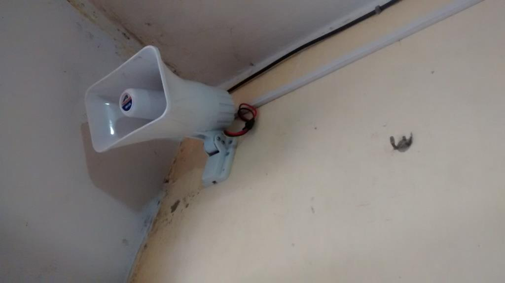
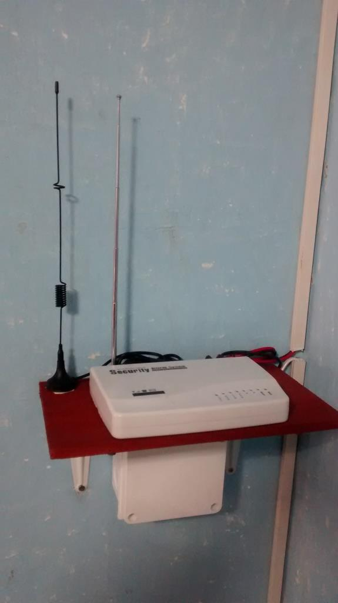
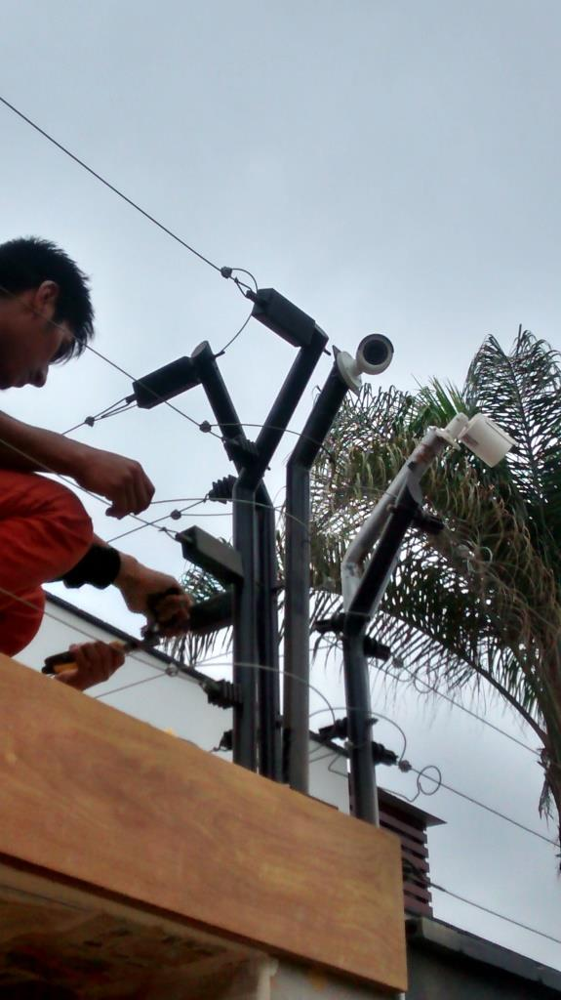
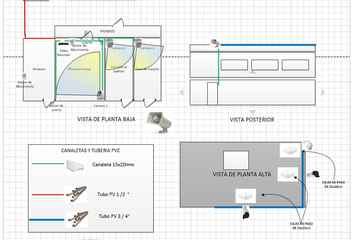
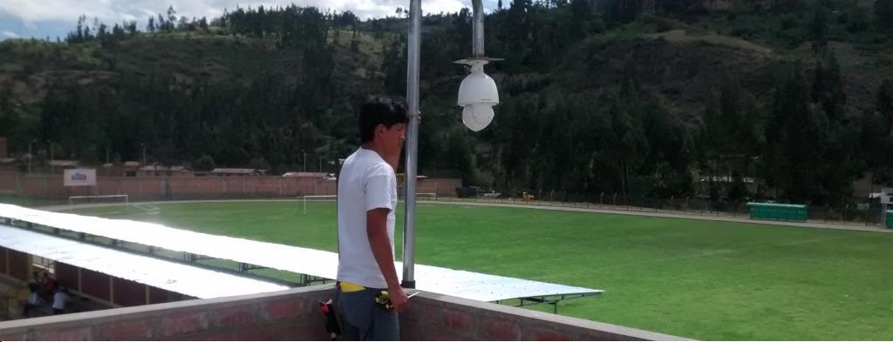
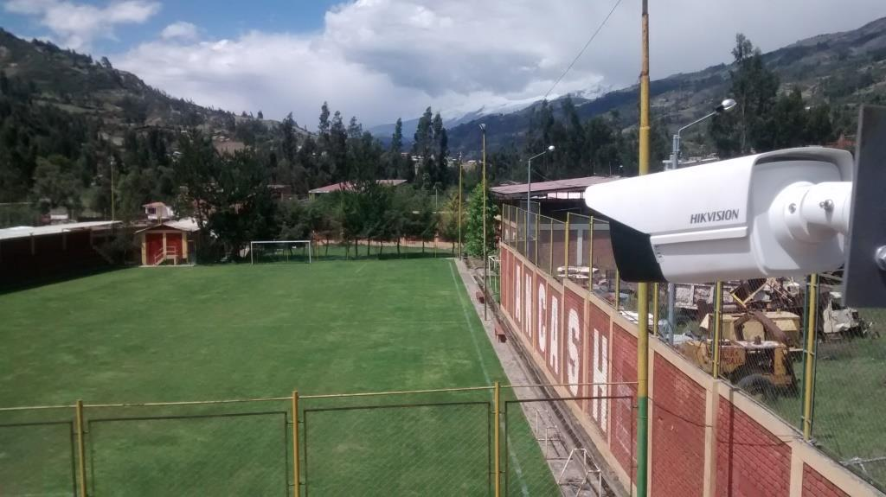

Conoce nuestros proyectos exitosos de sistemas de seguridad y videovigilancia para clientes residenciales y comerciales.


En estos 02 proyectos se han implementado sistemas de alarmas GSM con sensores magnéticos de puertas y de movimiento (PIR). Adicionalmente se agregó un sirena de mayor potencia para mayor efecto disuasivo. Ambos clientes usan controles remotos de mano para activar y desactivar sus paneles de alarmas y cualquier evento son alertados con mensajes de celular y llamadas que efectúa de manera automática el sistema.
Todos los sensores son inalámbricos, lo cual permite su fácil instalación y mantenimiento. Por seguridad los paneles principales cuenta con baterías incorporadas que permite una autonomía de hasta 4 horas en caso de falta de fluido eléctrico.
Ambos clientes han complementado sus soluciones de seguridad con cámaras IP que les permite proteger su hogar desde dentro o cuando salen del mismo.

En este proyecto se implementó un sistema de CCTV de 05 cámaras Turbo HD, y un sistema de almacenamiento de 15 días, y visualización desde dispositivos móviles.
Cámaras tipo domo (DS2CE56D1T-IR) y cámaras tipo tubo (DS2CE16C0T-IR) forman parte de la solución junto con un DVR de 8 canales y un disco de almacenamiento marca Western Digital (Edición Púrpura) de 1TB.
Las cámaras externas están instaladas sobre brazos metálicos alineados a los cercos eléctricos, los cuales permiten una vista panorámica del exterior. Todo el cableado externo es protegido por tubos PVC y asegurados a las vigas, y el cableado interno es instalado sobre canaletas de 15×22 mm.
La conexión a Internet requerida fue incrementada a 8Mbps con el objetivo de mejorar la experiencia del usuario desde equipos móviles.



El cliente es un complejo deportivo, cubre una extensión estimada de 4.5 hectáreas, un edificio administrativo y 04 canchas deportivas.
Luego del análisis del requerimiento, se diseñó una solución de CCTV de 8 cámaras de tecnología Turbo HD (HDTVI) con 04 internas, 03 varifocales externas y una cámara PTZ de 23x de zoom que cubra la mayor parte de las instalaciones. Adicionalmente, el edificio es protegido por un sistema de alarma GSM.
La vista de las canchas laterales son monitoreadas por cámaras HIKVISION modelo DS2C16C2T-VFIR3, debido a su alcance de infrarrojo de 40m.
La cámara principal fue ubicada en el edificio administrativo dado su panorámica vista a todo el complejo, la función de rotado (PTZ) con 360° y un zoom de 23x, permite un alcance efectivo de 200 mt. en todas las direcciones.
La estructura de soporte metálico fue rediseñada para un tipo bastón giratorio, que provee un mejor sistema para trabajos de mantenimiento. Algunas de las cámaras requirieron ser colocadas en alturas de 12m, por lo que estructuras de metal fueron instaladas por el cliente para este fin.
Contáctanos y diseñaremos una solución de seguridad a medida para tu negocio o residencia.
Solicitar cotización